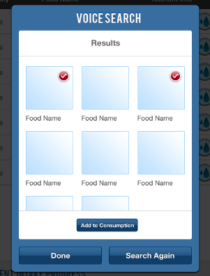

Food items can also be tracked by speaking voice commands. To select the voice-to-text feature, click on the microphone icon from the Summary page:
The "Voice Search" box will appear:
Touch the "Speak Now" box and then say what food item you would like to search for. The application will automatically run a search for the phrase you spoke, and any matching results will be displayed.

Touch any items in the results page to check them (a red check mark will appear over any selected items). Once you have selected the item(s) you wish to enter, click on the "Add to Consumption" button and the selected items will be added to your consumption list.